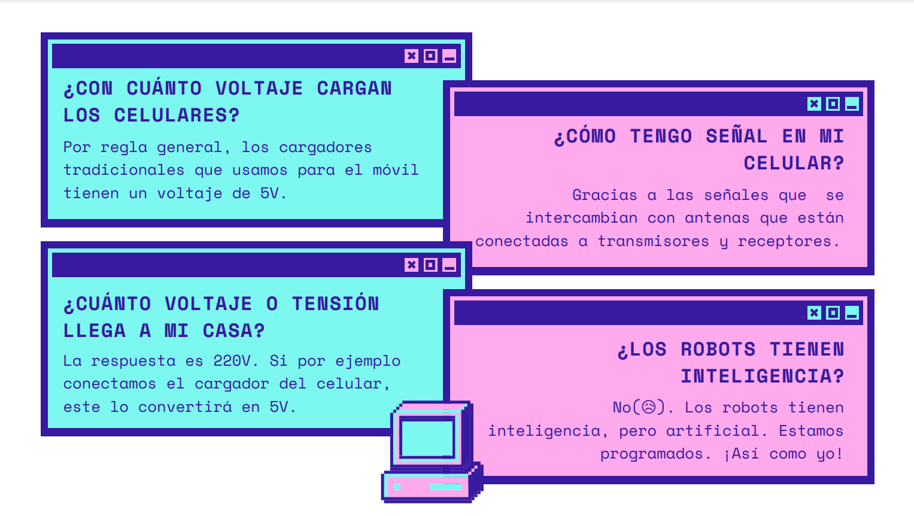

Semana I
Hoy fue la primera clase y, para empezar con la teoría, tomamos un quiz recordatorio de algunas cosas que vimos en Lab 1. ¡Sorprendentemente acerté en todas! Ahora analizaremos algunas de las preguntas que estuvieron en el quiz.
SYLLABUS
Hablamos también del contenido de cada sesión del promedio y los entregables finales. Por ejemplo: una bitácora por cada sesión y el template con el avance de la página web.
APLICATIVOS Y SOFTWARE
Visual Studio. Link de descarga: Click aquí.
Qlone App
Meshroom
Arduino IDE
Blender
Discord
Arte Con Chatarra Electrónica
Vimos un breve video de lo que se puede hacer con chatarra electrónica. ¡Muy creativo!